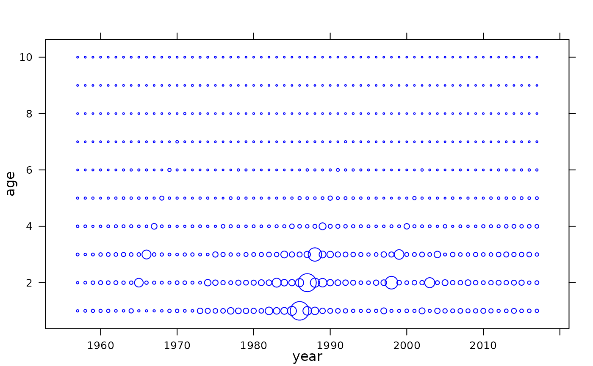
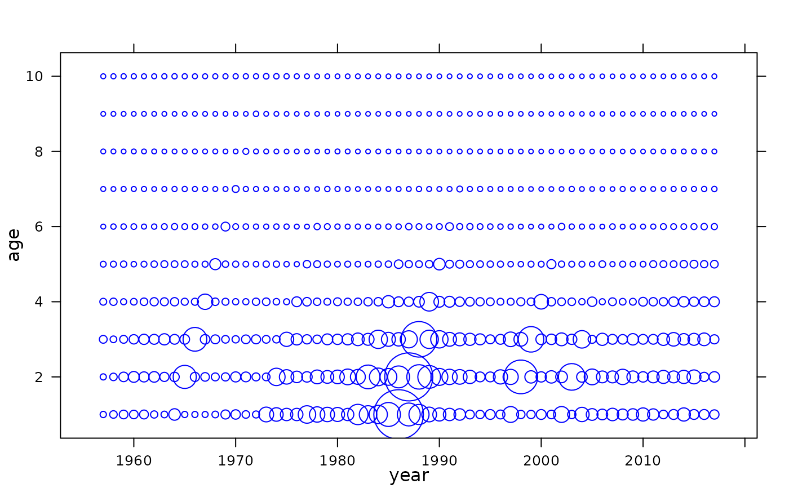
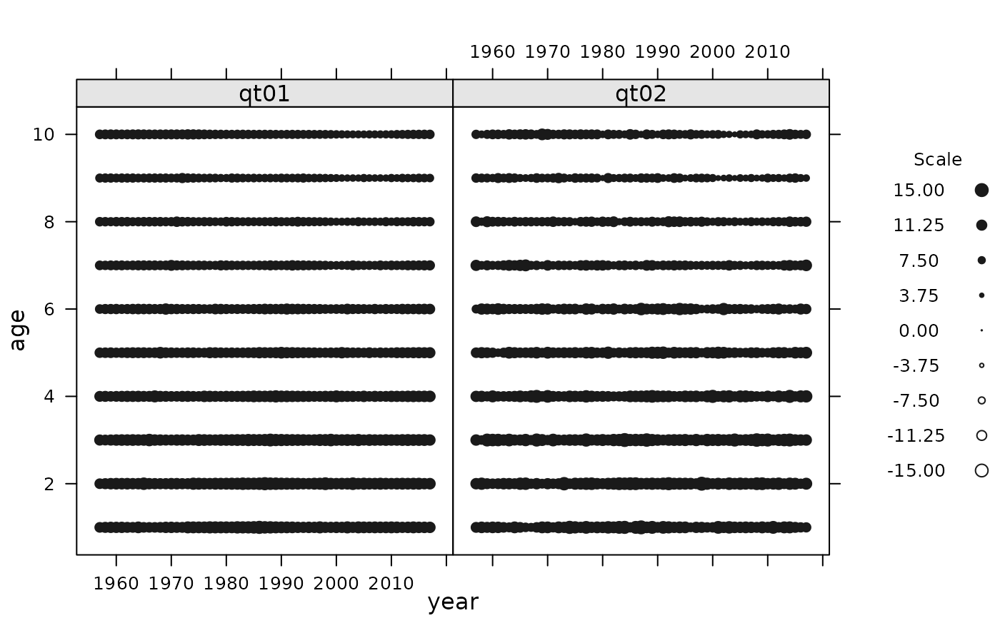
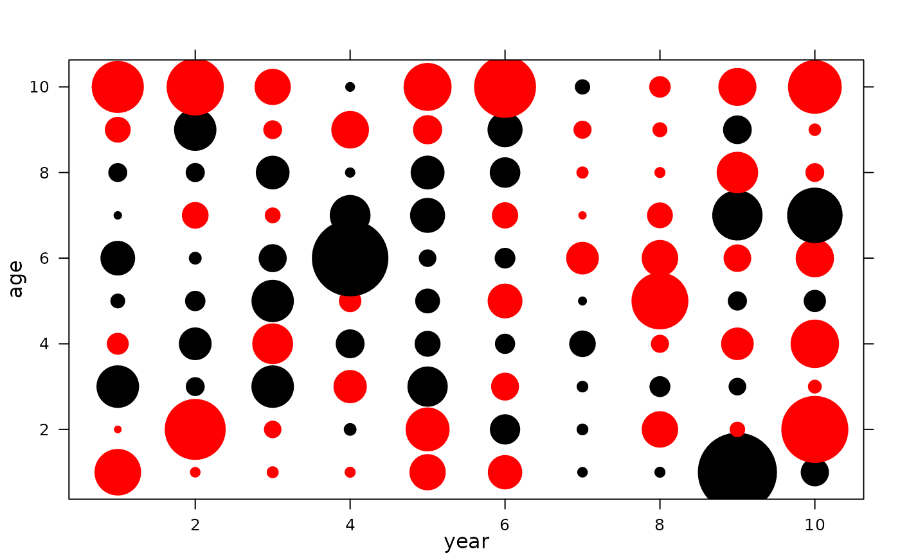

This method plots three dimensional data such as matrices by age and year or
age-class, very common in fisheries. The area of each bubble is proportional
to the corresponding value in the matrix. Note that bubbles accepts
an argument bub.scale to control the relative size of the bubbles.
Positive and negative values have separate colours.
Usage
# S4 method for class 'formula,FLQuant'
bubbles(x, data, bub.scale = 2.5, col = c("blue", "red"), ...)
# S4 method for class 'formula,data.frame'
bubbles(x, data, bub.scale = 2.5, col = c("blue", "red"), ...)
# S4 method for class 'formula,FLCohort'
bubbles(x, data, bub.scale = 2.5, ...)
# S4 method for class 'formula,FLQuants'
bubbles(x, data, bub.scale = 2.5, bub.col = gray(c(0.1, 0.1)), ...)Examples
data(ple4)
bubbles(age~year, data=catch.n(ple4))

bubbles(age~year, data=catch.n(ple4), bub.scale=5)

bubbles(age~cohort, data=FLCohort(catch.n(ple4)), bub.scale=5)
qt01 <- log(catch.n(ple4)+1)
qt02 <- qt01+rnorm(length(qt01))
flqs <- FLQuants(qt01=qt01, qt02=qt02)
bubbles(age~year|qname, data=flqs, bub.scale=1)

qt03 <- FLQuant(rnorm(100),dimnames=list(age=as.character(1:10),
year=as.character(1:10)))
bubbles(age~year, data=qt03, bub.scale=7, col=c("black","red"), pch=16)
